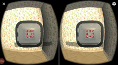

These are examples of projects I created in Unity. I have provided a short GIF or a video for each of them. Simply click the thumbnail to get a glimpse of the game!
Spellzee
A cooperative, turn-based multiplayer game in which you roll elemental aspects similar to Yahtzee, and have to cast spells based on the elements you rolled.
GitHub
Soul Knight
I teamed up with a friend for LD44. This is a 2D platformer with the theme "Your life is currency", in which your life ("souls") grant you different abilities. Souls can be swapped in shops.
Downloadable on itch.io
Submission page
VR Escape Room
A short escape room game for VR set in an alien spaceship, created for a course at uni.
Sadly, I do not own a VR device and therefore could not record this.
Tap It!
Something that could probably be considered a mobile game, and a remake of an older Java game of mine. The player needs to tap colored cells, which exhibit different behavior based on their color.
The hourglass icon was created by Lorc (game-icons.net).
Monkey Tree
Another "probably a mobile game" game, created for Ludum Dare. Utilizes a unique way of mouse input to quickly exhaust the player.
Playable on itch.io
Submission page
RoxDrop
A small mobile game I created, which also includes a meta-game of buying upgrades.
The sprites used were created by Michele "Buch" Bucelli.

Tea Time
A point-and-click/puzzle game for cardboard VR created in a group of 6 students for a course at university.
Catch the Goblin
A desktop game where you need to find and catch a goblin in a forest. Created with 4 others for a course at university.
Memory
A simple game of memory. Features different levels and a mistake mechanic. PC + Android version.
Icons taken from game-icons.net, created by various authors.
Fall Asheep
A very simple Android game where you have to make sheep hop over a fence by tapping. I mainly focused on improving my art skills with this project.
Beyond the Atmo-Sphere
My first Unity game. Many years old. You control a ball with newtonian physics and have to complete levels in a set amount of time.
Jumper
A prototype for an Android game. You charge up a vertical and horizontal force by pressing the left or right side of the screen. Sadly less fun than I thought it would be.

{kind=link}
{kind=link}
{kind=link}
{kind=link}
{kind=link}
{kind=link}
{kind=link}
{kind=link}
{kind=link}
{kind=link}
{kind=link}
{kind=link}
{kind=link}
{kind=link}
{kind=link}
{kind=link}